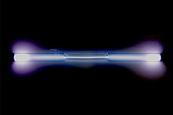

Xenon
| 
A xenon-filled discharge tube glowing light blue
|
|||||||||||||||||||||||||||||||||||||||||||||||||||||||||||||||||||||||||||||||||||||||||||||||||||||||||||||||||||||||||||||||||||||||||||||||||||||||||||||||||||||||||||||||||||||||||||||||||||||||||||||||||||||||||||||||||||||
|
Spectral lines of xenon
|
|||||||||||||||||||||||||||||||||||||||||||||||||||||||||||||||||||||||||||||||||||||||||||||||||||||||||||||||||||||||||||||||||||||||||||||||||||||||||||||||||||||||||||||||||||||||||||||||||||||||||||||||||||||||||||||||||||||
| General properties | |||||||||||||||||||||||||||||||||||||||||||||||||||||||||||||||||||||||||||||||||||||||||||||||||||||||||||||||||||||||||||||||||||||||||||||||||||||||||||||||||||||||||||||||||||||||||||||||||||||||||||||||||||||||||||||||||||||
|---|---|---|---|---|---|---|---|---|---|---|---|---|---|---|---|---|---|---|---|---|---|---|---|---|---|---|---|---|---|---|---|---|---|---|---|---|---|---|---|---|---|---|---|---|---|---|---|---|---|---|---|---|---|---|---|---|---|---|---|---|---|---|---|---|---|---|---|---|---|---|---|---|---|---|---|---|---|---|---|---|---|---|---|---|---|---|---|---|---|---|---|---|---|---|---|---|---|---|---|---|---|---|---|---|---|---|---|---|---|---|---|---|---|---|---|---|---|---|---|---|---|---|---|---|---|---|---|---|---|---|---|---|---|---|---|---|---|---|---|---|---|---|---|---|---|---|---|---|---|---|---|---|---|---|---|---|---|---|---|---|---|---|---|---|---|---|---|---|---|---|---|---|---|---|---|---|---|---|---|---|---|---|---|---|---|---|---|---|---|---|---|---|---|---|---|---|---|---|---|---|---|---|---|---|---|---|---|---|---|---|---|---|---|---|---|---|---|---|---|---|---|---|---|---|---|---|---|---|---|
| Name, symbol | xenon, Xe | ||||||||||||||||||||||||||||||||||||||||||||||||||||||||||||||||||||||||||||||||||||||||||||||||||||||||||||||||||||||||||||||||||||||||||||||||||||||||||||||||||||||||||||||||||||||||||||||||||||||||||||||||||||||||||||||||||||
| Pronunciation | /ˈzɛnɒn/[1] or /ˈziːnɒn/[2] ZEN-on or ZEE-non |
||||||||||||||||||||||||||||||||||||||||||||||||||||||||||||||||||||||||||||||||||||||||||||||||||||||||||||||||||||||||||||||||||||||||||||||||||||||||||||||||||||||||||||||||||||||||||||||||||||||||||||||||||||||||||||||||||||
| Appearance | colorless gas, exhibiting a blue glow when placed in a high voltage electric field | ||||||||||||||||||||||||||||||||||||||||||||||||||||||||||||||||||||||||||||||||||||||||||||||||||||||||||||||||||||||||||||||||||||||||||||||||||||||||||||||||||||||||||||||||||||||||||||||||||||||||||||||||||||||||||||||||||||
| Xenon in the periodic table | |||||||||||||||||||||||||||||||||||||||||||||||||||||||||||||||||||||||||||||||||||||||||||||||||||||||||||||||||||||||||||||||||||||||||||||||||||||||||||||||||||||||||||||||||||||||||||||||||||||||||||||||||||||||||||||||||||||
|
|||||||||||||||||||||||||||||||||||||||||||||||||||||||||||||||||||||||||||||||||||||||||||||||||||||||||||||||||||||||||||||||||||||||||||||||||||||||||||||||||||||||||||||||||||||||||||||||||||||||||||||||||||||||||||||||||||||
| Atomic number | 54 | ||||||||||||||||||||||||||||||||||||||||||||||||||||||||||||||||||||||||||||||||||||||||||||||||||||||||||||||||||||||||||||||||||||||||||||||||||||||||||||||||||||||||||||||||||||||||||||||||||||||||||||||||||||||||||||||||||||
| Standard atomic weight (±) | 131.293(6)[3] | ||||||||||||||||||||||||||||||||||||||||||||||||||||||||||||||||||||||||||||||||||||||||||||||||||||||||||||||||||||||||||||||||||||||||||||||||||||||||||||||||||||||||||||||||||||||||||||||||||||||||||||||||||||||||||||||||||||
| Element category | noble gas | ||||||||||||||||||||||||||||||||||||||||||||||||||||||||||||||||||||||||||||||||||||||||||||||||||||||||||||||||||||||||||||||||||||||||||||||||||||||||||||||||||||||||||||||||||||||||||||||||||||||||||||||||||||||||||||||||||||
| Group, block | group 18 (noble gases), p-block | ||||||||||||||||||||||||||||||||||||||||||||||||||||||||||||||||||||||||||||||||||||||||||||||||||||||||||||||||||||||||||||||||||||||||||||||||||||||||||||||||||||||||||||||||||||||||||||||||||||||||||||||||||||||||||||||||||||
| Period | period 5 | ||||||||||||||||||||||||||||||||||||||||||||||||||||||||||||||||||||||||||||||||||||||||||||||||||||||||||||||||||||||||||||||||||||||||||||||||||||||||||||||||||||||||||||||||||||||||||||||||||||||||||||||||||||||||||||||||||||
| Electron configuration | [Kr] 4d10 5s2 5p6 | ||||||||||||||||||||||||||||||||||||||||||||||||||||||||||||||||||||||||||||||||||||||||||||||||||||||||||||||||||||||||||||||||||||||||||||||||||||||||||||||||||||||||||||||||||||||||||||||||||||||||||||||||||||||||||||||||||||
| per shell | 2, 8, 18, 18, 8 | ||||||||||||||||||||||||||||||||||||||||||||||||||||||||||||||||||||||||||||||||||||||||||||||||||||||||||||||||||||||||||||||||||||||||||||||||||||||||||||||||||||||||||||||||||||||||||||||||||||||||||||||||||||||||||||||||||||
| Physical properties | |||||||||||||||||||||||||||||||||||||||||||||||||||||||||||||||||||||||||||||||||||||||||||||||||||||||||||||||||||||||||||||||||||||||||||||||||||||||||||||||||||||||||||||||||||||||||||||||||||||||||||||||||||||||||||||||||||||
| Phase | gas | ||||||||||||||||||||||||||||||||||||||||||||||||||||||||||||||||||||||||||||||||||||||||||||||||||||||||||||||||||||||||||||||||||||||||||||||||||||||||||||||||||||||||||||||||||||||||||||||||||||||||||||||||||||||||||||||||||||
| Melting point | 161.40 K (−111.75 °C, −169.15 °F) | ||||||||||||||||||||||||||||||||||||||||||||||||||||||||||||||||||||||||||||||||||||||||||||||||||||||||||||||||||||||||||||||||||||||||||||||||||||||||||||||||||||||||||||||||||||||||||||||||||||||||||||||||||||||||||||||||||||
| Boiling point | 165.051 K (−108.099 °C, −162.578 °F) | ||||||||||||||||||||||||||||||||||||||||||||||||||||||||||||||||||||||||||||||||||||||||||||||||||||||||||||||||||||||||||||||||||||||||||||||||||||||||||||||||||||||||||||||||||||||||||||||||||||||||||||||||||||||||||||||||||||
| Density at stp (0 °C and 101.325 kPa) | 5.894 g·L−1 | ||||||||||||||||||||||||||||||||||||||||||||||||||||||||||||||||||||||||||||||||||||||||||||||||||||||||||||||||||||||||||||||||||||||||||||||||||||||||||||||||||||||||||||||||||||||||||||||||||||||||||||||||||||||||||||||||||||
| when liquid, at b.p. | 2.942 g·cm−3[4] | ||||||||||||||||||||||||||||||||||||||||||||||||||||||||||||||||||||||||||||||||||||||||||||||||||||||||||||||||||||||||||||||||||||||||||||||||||||||||||||||||||||||||||||||||||||||||||||||||||||||||||||||||||||||||||||||||||||
| Triple point | 161.405 K, 81.77 kPa[5] | ||||||||||||||||||||||||||||||||||||||||||||||||||||||||||||||||||||||||||||||||||||||||||||||||||||||||||||||||||||||||||||||||||||||||||||||||||||||||||||||||||||||||||||||||||||||||||||||||||||||||||||||||||||||||||||||||||||
| Critical point | 289.733 K, 5.842 MPa[5] | ||||||||||||||||||||||||||||||||||||||||||||||||||||||||||||||||||||||||||||||||||||||||||||||||||||||||||||||||||||||||||||||||||||||||||||||||||||||||||||||||||||||||||||||||||||||||||||||||||||||||||||||||||||||||||||||||||||
| Heat of fusion | 2.27 kJ·mol−1 | ||||||||||||||||||||||||||||||||||||||||||||||||||||||||||||||||||||||||||||||||||||||||||||||||||||||||||||||||||||||||||||||||||||||||||||||||||||||||||||||||||||||||||||||||||||||||||||||||||||||||||||||||||||||||||||||||||||
| Heat of vaporization | 12.64 kJ·mol−1 | ||||||||||||||||||||||||||||||||||||||||||||||||||||||||||||||||||||||||||||||||||||||||||||||||||||||||||||||||||||||||||||||||||||||||||||||||||||||||||||||||||||||||||||||||||||||||||||||||||||||||||||||||||||||||||||||||||||
| Molar heat capacity | 21.01[6] J·mol−1·K−1 | ||||||||||||||||||||||||||||||||||||||||||||||||||||||||||||||||||||||||||||||||||||||||||||||||||||||||||||||||||||||||||||||||||||||||||||||||||||||||||||||||||||||||||||||||||||||||||||||||||||||||||||||||||||||||||||||||||||
vapor pressure
|
|||||||||||||||||||||||||||||||||||||||||||||||||||||||||||||||||||||||||||||||||||||||||||||||||||||||||||||||||||||||||||||||||||||||||||||||||||||||||||||||||||||||||||||||||||||||||||||||||||||||||||||||||||||||||||||||||||||
| Atomic properties | |||||||||||||||||||||||||||||||||||||||||||||||||||||||||||||||||||||||||||||||||||||||||||||||||||||||||||||||||||||||||||||||||||||||||||||||||||||||||||||||||||||||||||||||||||||||||||||||||||||||||||||||||||||||||||||||||||||
| Oxidation states | 0, +1, +2, +4, +6, +8 (rarely more than 0; a weakly acidic oxide) | ||||||||||||||||||||||||||||||||||||||||||||||||||||||||||||||||||||||||||||||||||||||||||||||||||||||||||||||||||||||||||||||||||||||||||||||||||||||||||||||||||||||||||||||||||||||||||||||||||||||||||||||||||||||||||||||||||||
| Electronegativity | Pauling scale: 2.6 | ||||||||||||||||||||||||||||||||||||||||||||||||||||||||||||||||||||||||||||||||||||||||||||||||||||||||||||||||||||||||||||||||||||||||||||||||||||||||||||||||||||||||||||||||||||||||||||||||||||||||||||||||||||||||||||||||||||
| Ionization energies | 1st: 1170.4 kJ·mol−1 2nd: 2046.4 kJ·mol−1 3rd: 3099.4 kJ·mol−1 |
||||||||||||||||||||||||||||||||||||||||||||||||||||||||||||||||||||||||||||||||||||||||||||||||||||||||||||||||||||||||||||||||||||||||||||||||||||||||||||||||||||||||||||||||||||||||||||||||||||||||||||||||||||||||||||||||||||
| Covalent radius | 140±9 pm | ||||||||||||||||||||||||||||||||||||||||||||||||||||||||||||||||||||||||||||||||||||||||||||||||||||||||||||||||||||||||||||||||||||||||||||||||||||||||||||||||||||||||||||||||||||||||||||||||||||||||||||||||||||||||||||||||||||
| Van der Waals radius | 216 pm | ||||||||||||||||||||||||||||||||||||||||||||||||||||||||||||||||||||||||||||||||||||||||||||||||||||||||||||||||||||||||||||||||||||||||||||||||||||||||||||||||||||||||||||||||||||||||||||||||||||||||||||||||||||||||||||||||||||
| Miscellanea | |||||||||||||||||||||||||||||||||||||||||||||||||||||||||||||||||||||||||||||||||||||||||||||||||||||||||||||||||||||||||||||||||||||||||||||||||||||||||||||||||||||||||||||||||||||||||||||||||||||||||||||||||||||||||||||||||||||
| Crystal structure | face-centered cubic (fcc) | ||||||||||||||||||||||||||||||||||||||||||||||||||||||||||||||||||||||||||||||||||||||||||||||||||||||||||||||||||||||||||||||||||||||||||||||||||||||||||||||||||||||||||||||||||||||||||||||||||||||||||||||||||||||||||||||||||||
| Speed of sound | gas: 169 m·s−1 liquid: 1090 m·s−1 |
||||||||||||||||||||||||||||||||||||||||||||||||||||||||||||||||||||||||||||||||||||||||||||||||||||||||||||||||||||||||||||||||||||||||||||||||||||||||||||||||||||||||||||||||||||||||||||||||||||||||||||||||||||||||||||||||||||
| Thermal conductivity | 5.65×10−3 W·m−1·K−1 | ||||||||||||||||||||||||||||||||||||||||||||||||||||||||||||||||||||||||||||||||||||||||||||||||||||||||||||||||||||||||||||||||||||||||||||||||||||||||||||||||||||||||||||||||||||||||||||||||||||||||||||||||||||||||||||||||||||
| Magnetic ordering | diamagnetic[7] | ||||||||||||||||||||||||||||||||||||||||||||||||||||||||||||||||||||||||||||||||||||||||||||||||||||||||||||||||||||||||||||||||||||||||||||||||||||||||||||||||||||||||||||||||||||||||||||||||||||||||||||||||||||||||||||||||||||
| CAS Registry Number | 7440-63-3 | ||||||||||||||||||||||||||||||||||||||||||||||||||||||||||||||||||||||||||||||||||||||||||||||||||||||||||||||||||||||||||||||||||||||||||||||||||||||||||||||||||||||||||||||||||||||||||||||||||||||||||||||||||||||||||||||||||||
| History | |||||||||||||||||||||||||||||||||||||||||||||||||||||||||||||||||||||||||||||||||||||||||||||||||||||||||||||||||||||||||||||||||||||||||||||||||||||||||||||||||||||||||||||||||||||||||||||||||||||||||||||||||||||||||||||||||||||
| Discovery and first isolation | William Ramsay and Morris Travers (1898) | ||||||||||||||||||||||||||||||||||||||||||||||||||||||||||||||||||||||||||||||||||||||||||||||||||||||||||||||||||||||||||||||||||||||||||||||||||||||||||||||||||||||||||||||||||||||||||||||||||||||||||||||||||||||||||||||||||||
| Most stable isotopes | |||||||||||||||||||||||||||||||||||||||||||||||||||||||||||||||||||||||||||||||||||||||||||||||||||||||||||||||||||||||||||||||||||||||||||||||||||||||||||||||||||||||||||||||||||||||||||||||||||||||||||||||||||||||||||||||||||||
|
|||||||||||||||||||||||||||||||||||||||||||||||||||||||||||||||||||||||||||||||||||||||||||||||||||||||||||||||||||||||||||||||||||||||||||||||||||||||||||||||||||||||||||||||||||||||||||||||||||||||||||||||||||||||||||||||||||||
| Decay modes in parentheses are predicted, but have not yet been observed | |||||||||||||||||||||||||||||||||||||||||||||||||||||||||||||||||||||||||||||||||||||||||||||||||||||||||||||||||||||||||||||||||||||||||||||||||||||||||||||||||||||||||||||||||||||||||||||||||||||||||||||||||||||||||||||||||||||
{kind=link}
{kind=link}
{kind=link}
Xenon is a chemical element with symbol Xe and atomic number 54. It is a colorless, dense, odorless noble gas, that occurs in the Earth's atmosphere in trace amounts.[10] Although generally unreactive, xenon can undergo a few chemical reactions such as the formation of xenon hexafluoroplatinate, the first noble gas compound to be synthesized.[11][12][13]
Naturally occurring xenon consists of eight stable isotopes. There are also over 40 unstable isotopes that undergo radioactive decay. The isotope ratios of xenon are an important tool for studying the early history of the Solar System.[14] Radioactive xenon-135 is produced from iodine-135 as a result of nuclear fission, and it acts as the most significant neutron absorber in nuclear reactors.[15]
Xenon is used in flash lamps[16] and arc lamps,[17] and as a general anesthetic.[18] The first excimer laser design used a xenon dimer molecule (Xe2) as its lasing medium,[19] and the earliest laser designs used xenon flash lamps as pumps.[20] Xenon is also being used to search for hypothetical weakly interacting massive particles[21] and as the propellant for ion thrusters in spacecraft.[22]
Contents
[hide]History[edit]
Xenon was discovered in England by the Scottish chemist William Ramsay and English chemist Morris Travers on July 12, 1898, shortly after their discovery of the elements krypton and neon. They found xenon in the residue left over from evaporating components of liquid air.[23][24] Ramsay suggested the name xenon for this gas from the Greek word ξένον [xenon], neuter singular form of ξένος [xenos], meaning 'foreign(er)', 'strange(r)', or 'guest'.[25][26] In 1902, Ramsay estimated the proportion of xenon in the Earth's atmosphere as one part in 20 million.[27]
During the 1930s, American engineer Harold Edgerton began exploring strobe light technology for high speed photography. This led him to the invention of the xenon flash lamp, in which light is generated by sending a brief electrical current through a tube filled with xenon gas. In 1934, Edgerton was able to generate flashes as brief as one microsecond with this method.[16][28][29]
In 1939, American physician Albert R. Behnke Jr. began exploring the causes of "drunkenness" in deep-sea divers. He tested the effects of varying the breathing mixtures on his subjects, and discovered that this caused the divers to perceive a change in depth. From his results, he deduced that xenon gas could serve as an anesthetic. Although Russian toxicologist Nikolay V. Lazarev apparently studied xenon anesthesia in 1941, the first published report confirming xenon anesthesia was in 1946 by American medical researcher John H. Lawrence, who experimented on mice. Xenon was first used as a surgical anesthetic in 1951 by American anesthesiologist Stuart C. Cullen, who successfully operated on two patients.[30]
Xenon and the other noble gases were for a long time considered to be completely chemically inert and not able to form compounds. However, while teaching at the University of British Columbia, Neil Bartlett discovered that the gas platinum hexafluoride (PtF6) was a powerful oxidizing agent that could oxidize oxygen gas (O2) to form dioxygenyl hexafluoroplatinate (O2+[PtF6]−).[31] Since O2 and xenon have almost the same first ionization potential, Bartlett realized that platinum hexafluoride might also be able to oxidize xenon. On March 23, 1962, he mixed the two gases and produced the first known compound of a noble gas, xenon hexafluoroplatinate.[32][13] Bartlett thought its composition to be Xe+[PtF6]−, although later work has revealed that it was probably a mixture of various xenon-containing salts.[33][34][35] Since then, many other xenon compounds have been discovered,[36] along with some compounds of the noble gases argon, krypton, and radon, including argon fluorohydride (HArF),[37] krypton difluoride (KrF2),[38][39] and radon fluoride.[40] By 1971, more than 80 xenon compounds were known.[41][42]
In November 1999 a team of IBM scientists demonstrated a technology capable of manipulating individual atoms. The program, called IBM in atoms, used a scanning tunneling microscope to arrange 35 individual xenon atoms on a substrate of chilled crystal of nickel to spell out the three letter company acronym. It was the first time atoms had been precisely positioned on a flat surface.[43]
Characteristics[edit]
{kind=link}
{kind=link}
Xenon has atomic number 54; that is, its nucleus contains 54 protons. At standard temperature and pressure, pure xenon gas has a density of 5.761 kg/m3, about 4.5 times the surface density of the Earth's atmosphere, 1.217 kg/m3.[44] As a liquid, xenon has a density of up to 3.100 g/mL, with the density maximum occurring at the triple point.[45] Under the same conditions, the density of solid xenon, 3.640 g/cm3, is higher than the average density of granite, 2.75 g/cm3.[45] Using gigapascals of pressure, xenon has been forced into a metallic phase.[46]
Solid xenon changes from face-centered cubic (fcc) to hexagonal close packed (hcp) crystal phase under pressure and begins to turn metallic at about 140 GPa, with no noticeable volume change in the hcp phase. It is completely metallic at 155 GPa. When metalized, xenon looks sky blue because it absorbs red light and transmits other visible frequencies. Such behavior is unusual for a metal and is explained by the relatively small widths of the electron bands in metallic xenon.[47][48]
Xenon is a member of the zero-valence elements that are called noble or inert gases. It is inert to most common chemical reactions (such as combustion, for example) because the outer valence shell contains eight electrons. This produces a stable, minimum energy configuration in which the outer electrons are tightly bound.[49]
In a gas-filled tube, xenon emits a blue or lavenderish glow when the gas is excited by electrical discharge. Xenon emits a band of emission lines that span the visual spectrum,[50] but the most intense lines occur in the region of blue light, which produces the coloration.[51]
Occurrence and production[edit]
Xenon is a trace gas in Earth's atmosphere, occurring at 87±1 parts per billion (nL/L), or approximately 1 part per 11.5 million,[52] and is also found as a component in gases emitted from some mineral springs.
Xenon is obtained commercially as a by-product of the separation of air into oxygen and nitrogen. After this separation, generally performed by fractional distillation in a double-column plant, the liquid oxygen produced will contain small quantities of krypton and xenon. By additional fractional distillation steps, the liquid oxygen may be enriched to contain 0.1–0.2% of a krypton/xenon mixture, which is extracted either via absorption onto silica gel or by distillation. Finally, the krypton/xenon mixture may be separated into krypton and xenon via distillation.[53][54] Worldwide production of xenon in 1998 was estimated at 5,000–7,000 m3.[55] Because of its low abundance, xenon is much more expensive than the lighter noble gases—approximate prices for the purchase of small quantities in Europe in 1999 were 10 €/L for xenon, 1 €/L for krypton, and 0.20 €/L for neon;[55] the much more plentiful argon costs less than a cent per liter.
Within the Solar System, the nucleon fraction of xenon is 1.56 × 10−8, for an abundance of approximately one part in 630 thousand of the total mass.[56] Xenon is relatively rare in the Sun's atmosphere, on Earth, and in asteroids and comets. The planet Jupiter has an unusually high abundance of xenon in its atmosphere; about 2.6 times as much as the Sun.[57][58] This high abundance remains unexplained and may have been caused by an early and rapid buildup of planetesimals—small, subplanetary bodies—before the presolar disk began to heat up.[59] (Otherwise, xenon would not have been trapped in the planetesimal ices.) The problem of the low terrestrial xenon may potentially be explained by covalent bonding of xenon to oxygen within quartz, hence reducing the outgassing of xenon into the atmosphere.[60]
Unlike the lower mass noble gases, the normal stellar nucleosynthesis process inside a star does not form xenon. Elements more massive than iron-56 have a net energy cost to produce through fusion, so there is no energy gain for a star when creating xenon.[61] Instead, xenon is formed during supernova explosions,[62] by the slow neutron capture process (s-process) of red giant stars that have exhausted the hydrogen at their cores and entered the asymptotic giant branch,[63] in classical nova explosions[64] and from the radioactive decay of elements such as iodine, uranium and plutonium.[65]
Isotopes and isotopic studies[edit]
Naturally occurring xenon is made of eight stable isotopes, the most of any element with the exception of tin, which has ten. Xenon and tin are the only elements to have more than seven stable isotopes.[66] The isotopes 124Xe and 134Xe are predicted to undergo double beta decay, but this has never been observed so they are considered to be stable.[67] Besides these stable forms, there are over 40 unstable isotopes that have been studied. The longest lived of these isotopes is 136Xe, which has been observed to undergo double beta decay with a half-life of 2.11 x 1021yr.[68] 129Xe is produced by beta decay of 129I, which has a half-life of 16 million years, while 131mXe, 133Xe, 133mXe, and 135Xe are some of the fission products of both 235U and 239Pu,[65] and therefore used as indicators of nuclear explosions.
Nuclei of two of the stable isotopes of xenon, 129Xe and 131Xe, have non-zero intrinsic angular momenta (nuclear spins, suitable for nuclear magnetic resonance). The nuclear spins can be aligned beyond ordinary polarization levels by means of circularly polarized light and rubidium vapor.[69] The resulting spin polarization of xenon nuclei can surpass 50% of its maximum possible value, greatly exceeding the thermal equilibrium value dictated by paramagnetic statistics (typically 0.001% of the maximum value at room temperature, even in the strongest magnets). Such non-equilibrium alignment of spins is a temporary condition, and is called hyperpolarization. The process of hyperpolarizing the xenon is called optical pumping (although the process is different from pumping a laser).[70]
Because a 129Xe nucleus has a spin of 1/2, and therefore a zero electric quadrupole moment, the 129Xe nucleus does not experience any quadrupolar interactions during collisions with other atoms, and thus its hyperpolarization can be maintained for long periods of time even after the laser beam has been turned off and the alkali vapor removed by condensation on a room-temperature surface. Spin polarization of 129Xe can persist from several seconds for xenon atoms dissolved in blood[71] to several hours in the gas phase[72] and several days in deeply frozen solid xenon.[73] In contrast, 131Xe has a nuclear spin value of 3⁄2 and a nonzero quadrupole moment, and has t1 relaxation times in the millisecond and second ranges.[74]
Some radioactive isotopes of xenon, for example, 133Xe and 135Xe, are produced by neutron irradiation of fissionable material within nuclear reactors.[11] 135Xe is of considerable significance in the operation of nuclear fission reactors. 135Xe has a huge cross section for thermal neutrons, 2.6×106 barns,[15] so it acts as a neutron absorber or "poison" that can slow or stop the chain reaction after a period of operation. This was discovered in the earliest nuclear reactors built by the American Manhattan Project for plutonium production. Fortunately the designers had made provisions in the design to increase the reactor's reactivity (the number of neutrons per fission that go on to fission other atoms of nuclear fuel).[75] 135Xe reactor poisoning played a major role in the Chernobyl disaster.[76] A shutdown or decrease of power of a reactor can result in buildup of 135Xe and getting the reactor into the iodine pit.
Under adverse conditions, relatively high concentrations of radioactive xenon isotopes may be found emanating from nuclear reactors due to the release of fission products from cracked fuel rods,[77] or fissioning of uranium in cooling water.[78]
Because xenon is a tracer for two parent isotopes, xenon isotope ratios in meteorites are a powerful tool for studying the formation of the solar system. The iodine-xenon method of dating gives the time elapsed between nucleosynthesis and the condensation of a solid object from the solar nebula. In 1960, physicist John H. Reynolds discovered that certain meteorites contained an isotopic anomaly in the form of an overabundance of xenon-129. He inferred that this was a decay product of radioactive iodine-129. This isotope is produced slowly by cosmic ray spallation and nuclear fission, but is produced in quantity only in supernova explosions. As the half-life of 129I is comparatively short on a cosmological time scale, only 16 million years, this demonstrated that only a short time had passed between the supernova and the time the meteorites had solidified and trapped the 129I. These two events (supernova and solidification of gas cloud) were inferred to have happened during the early history of the Solar System, as the 129I isotope was likely generated before the Solar System was formed, but not long before, and seeded the solar gas cloud with isotopes from a second source. This supernova source may also have caused collapse of the solar gas cloud.[79][80]
In a similar way, xenon isotopic ratios such as 129Xe/130Xe and 136Xe/130Xe are also a powerful tool for understanding planetary differentiation and early outgassing.[14] For example, The atmosphere of Mars shows a xenon abundance similar to that of Earth: 0.08 parts per million,[81] however Mars shows a higher proportion of 129Xe than the Earth or the Sun. As this isotope is generated by radioactive decay, the result may indicate that Mars lost most of its primordial atmosphere, possibly within the first 100 million years after the planet was formed.[82][83] In another example, excess 129Xe found in carbon dioxide well gases from New Mexico was believed to be from the decay of mantle-derived gases soon after Earth's formation.[65][84]
Compounds[edit]
After Neil Bartlett's discovery in 1962 that xenon can form chemical compounds, a large number of xenon compounds have been discovered and described. Almost all known xenon compounds contain the electronegative atoms fluorine or oxygen.[85]
Halides[edit]
{kind=link}
{kind=link}
Three fluorides are known: XeF
2, XeF
4, and XeF
6. XeF is theorized to be unstable.[86] The fluorides are the starting point for the synthesis of almost all xenon compounds.
The solid, crystalline difluoride XeF
2 is formed when a mixture of fluorine and xenon gases is exposed to ultraviolet light.[87] Ordinary daylight is sufficient.[88] Long-term heating of XeF
2 at high temperatures under an NiF
2 catalyst yields XeF
6.[89] Pyrolysis of XeF
6 in the presence of NaF yields high-purity XeF
4.[90]
The xenon fluorides behave as both fluoride acceptors and fluoride donors, forming salts that contain such cations as XeF+
and Xe
2F+
3, and anions such as XeF−
5, XeF−
7, and XeF2−
8. The green, paramagnetic Xe+
2 is formed by the reduction of XeF
2 by xenon gas.[85]
XeF
2 is also able to form coordination complexes with transition metal ions. Over 30 such complexes have been synthesized and characterized.[89]
Whereas the xenon fluorides are well-characterized, the other halides are not known, the only exception being the dichloride, XeCl2.
Xenon dichloride is reported to be an endothermic, colorless,
crystalline compound that decomposes into the elements at 80 °C,
formed by the high-frequency irradiation of a mixture of xenon,
fluorine, and silicon or carbon tetrachloride.[91] However, doubt has been raised as to whether XeCl
2 is a real compound and not merely a van der Waals molecule consisting of weakly bound Xe atoms and Cl
2 molecules.[92] Theoretical calculations indicate that the linear molecule XeCl
2 is less stable than the van der Waals complex.[93]
Oxides and oxohalides[edit]
Three oxides of xenon are known: xenon trioxide (XeO
3) and xenon tetroxide (XeO
4), both of which are dangerously explosive and powerful oxidizing agents, and xenon dioxide (XeO2), which was reported in 2011 with a coordination number of four.[94] XeO2 forms when xenon tetrafluoride is poured over ice. Its crystal structure may allow it to replace silicon in silicate minerals.[95] The XeOO+ cation has been identified by infrared spectroscopy in solid argon.[96]
Xenon does not react with oxygen directly; the trioxide is formed by the hydrolysis of XeF
6:[97]
- XeF
6 + 3 H
2O → XeO
3 + 6 HF
XeO
3 is weakly acidic, dissolving in alkali to form unstable xenate salts containing the HXeO−
4 anion. These unstable salts easily disproportionate into xenon gas and perxenate salts, containing the XeO4−
6 anion.[98]
Barium perxenate, when treated with concentrated sulfuric acid, yields gaseous xenon tetroxide:[91]
- Ba
2XeO
6 + 2 H
2SO
4 → 2 BaSO
4 + 2 H
2O + XeO
4
To prevent decomposition, the xenon tetroxide thus formed is quickly cooled to form a pale-yellow solid. It explodes above −35.9 °C into xenon and oxygen gas.
A number of xenon oxyfluorides are known, including XeOF
2, XeOF
4, XeO
2F
2, and XeO
3F
2. XeOF
2 is formed by the reaction of OF
2 with xenon gas at low temperatures. It may also be obtained by the partial hydrolysis of XeF
4. It disproportionates at −20 °C into XeF
2 and XeO
2F
2.[99] XeOF
4 is formed by the partial hydrolysis of XeF
6,[100] or the reaction of XeF
6 with sodium perxenate, Na
4XeO
6. The latter reaction also produces a small amount of XeO
3F
2. XeOF
4 reacts with CsF to form the XeOF−
5 anion,[99][101] while XeOF3 reacts with the alkali metal fluorides KF, RbF and CsF to form the XeOF−
4 anion.[102]
Other compounds[edit]
Recently, there has been an interest in xenon compounds where xenon is directly bonded to a less electronegative element than fluorine or oxygen, particularly carbon.[103] Electron-withdrawing groups, such as groups with fluorine substitution, are necessary to stabilize these compounds.[98] Numerous such compounds have been characterized, including:[99][104]
- C
6F
5–Xe+
–N≡C–CH
3, where C6F5 is the pentafluorophenyl group. - [C
6F
5]
2Xe - C
6F
5–Xe–X, where X is CN, F, or Cl. - R–C≡C–Xe+
, where R is C
2F−
5 or tert-butyl. - C
6F
5–XeF+
2 - (C
6F
5Xe)
2Cl+
Other compounds containing xenon bonded to a less electronegative element include F–Xe–N(SO
2F)
2 and F–Xe–BF
2. The latter is synthesized from dioxygenyl tetrafluoroborate, O
2BF
4, at −100 °C.[99][105]
An unusual ion containing xenon is the tetraxenonogold(II) cation, AuXe2+
4, which contains Xe–Au bonds.[106] This ion occurs in the compound AuXe
4(Sb
2F
11)
2, and is remarkable in having direct chemical bonds between two notoriously unreactive atoms, xenon and gold, with xenon acting as a transition metal ligand.
The compound Xe
2Sb
2F
11 contains a Xe–Xe bond, the longest element-element bond known (308.71 pm = 3.0871 Å).[107]
In 1995, M. Räsänen and co-workers, scientists at the University of Helsinki in Finland, announced the preparation of xenon dihydride (HXeH), and later xenon hydride-hydroxide (HXeOH), hydroxenoacetylene (HXeCCH), and other Xe-containing molecules.[108] In 2008, Khriachtchev et al. reported the preparation of HXeOXeH by the photolysis of water within a cryogenic xenon matrix.[109] Deuterated molecules, HXeOD and DXeOH, have also been produced.[110]
Clathrates and excimers[edit]
In addition to compounds where xenon forms a chemical bond, xenon can form clathrates—substances where xenon atoms are trapped by the crystalline lattice of another compound. An example is xenon hydrate (Xe•5.75 H2O), where xenon atoms occupy vacancies in a lattice of water molecules.[111] This clathrate has a melting point of 24 °C.[112] The deuterated version of this hydrate has also been produced.[113] Such clathrate hydrates can occur naturally under conditions of high pressure, such as in Lake Vostok underneath the Antarctic ice sheet.[114] Clathrate formation can be used to fractionally distill xenon, argon and krypton.[115]
Xenon can also form endohedral fullerene compounds, where a xenon atom is trapped inside a fullerene molecule. The xenon atom trapped in the fullerene can be monitored via 129Xe nuclear magnetic resonance (NMR) spectroscopy. Using this technique, chemical reactions on the fullerene molecule can be analyzed, due to the sensitivity of the chemical shift of the xenon atom to its environment. However, the xenon atom also has an electronic influence on the reactivity of the fullerene.[116]
While xenon atoms are at their ground energy state, they repel each other and will not form a bond. When xenon atoms becomes energized, however, they can form an excimer (excited dimer) until the electrons return to the ground state. This entity is formed because the xenon atom tends to fill its outermost electronic shell, and can briefly do this by adding an electron from a neighboring xenon atom. The typical lifetime of a xenon excimer is 1–5 ns, and the decay releases photons with wavelengths of about 150 and 173 nm.[117][118] Xenon can also form excimers with other elements, such as the halogens bromine, chlorine and fluorine.[119]
Applications[edit]
Although xenon is rare and relatively expensive to extract from the Earth's atmosphere, it has a number of applications.
Illumination and optics[edit]
Gas-discharge lamps[edit]
Xenon is used in light-emitting devices called xenon flash lamps, which are used in photographic flashes and stroboscopic lamps;[16] to excite the active medium in lasers which then generate coherent light;[120] and, occasionally, in bactericidal lamps.[121] The first solid-state laser, invented in 1960, was pumped by a xenon flash lamp,[20] and lasers used to power inertial confinement fusion are also pumped by xenon flash lamps.[122]
{kind=link}
{kind=link}
Continuous, short-arc, high pressure xenon arc lamps have a color temperature closely approximating noon sunlight and are used in solar simulators. That is, the chromaticity of these lamps closely approximates a heated black body radiator that has a temperature close to that observed from the Sun. After they were first introduced during the 1940s, these lamps began replacing the shorter-lived carbon arc lamps in movie projectors.[17] They are employed in typical 35mm, IMAX and the new digital projectors film projection systems, automotive HID headlights, high-end "tactical" flashlights and other specialized uses. These arc lamps are an excellent source of short wavelength ultraviolet radiation and they have intense emissions in the near infrared, which is used in some night vision systems.
The individual cells in a plasma display use a mixture of xenon and neon that is converted into a plasma using electrodes. The interaction of this plasma with the electrodes generates ultraviolet photons, which then excite the phosphor coating on the front of the display.[123][124]
Xenon is used as a "starter gas" in high pressure sodium lamps. It has the lowest thermal conductivity and lowest ionization potential of all the non-radioactive noble gases. As a noble gas, it does not interfere with the chemical reactions occurring in the operating lamp. The low thermal conductivity minimizes thermal losses in the lamp while in the operating state, and the low ionization potential causes the breakdown voltage of the gas to be relatively low in the cold state, which allows the lamp to be more easily started.[125]
Lasers[edit]
In 1962, a group of researchers at Bell Laboratories discovered laser action in xenon,[126] and later found that the laser gain was improved by adding helium to the lasing medium.[127][128] The first excimer laser used a xenon dimer (Xe2) energized by a beam of electrons to produce stimulated emission at an ultraviolet wavelength of 176 nm.[19] Xenon chloride and xenon fluoride have also been used in excimer (or, more accurately, exciplex) lasers.[129] The xenon chloride excimer laser has been employed, for example, in certain dermatological uses.[130]
Medical[edit]
Anesthesia[edit]
Xenon has been used as a general anesthetic. Although it is expensive, anesthesia machines that can deliver xenon are about to appear on the European market, because advances in recovery and recycling of xenon have made it economically viable.[131][132]
Xenon interacts with many different receptors and ion channels and like many theoretically multi-modal inhalation anesthetics these interactions are likely complementary. Xenon is a high-affinity glycine-site NMDA receptor antagonist.[133] However, xenon distinguishes itself from other clinically used NMDA receptor antagonists in its lack of neurotoxicity and its ability to inhibit the neurotoxicity of ketamine and nitrous oxide.[134][135] Unlike ketamine and nitrous oxide, xenon does not stimulate a dopamine efflux from the nucleus accumbens.[136] Like nitrous oxide and cyclopropane, xenon activates the two-pore domain potassium channel TREK-1. A related channel TASK-3 also implicated in inhalational anesthetic actions is insensitive to xenon.[137] Xenon inhibits nicotinic acetylcholine α4β2 receptors which contribute to spinally mediated analgesia.[138][139] Xenon is an effective inhibitor of plasma membrane Ca2+ ATPase. Xenon inhibits Ca2+ ATPase by binding to a hydrophobic pore within the enzyme and preventing the enzyme from assuming active conformations.[140]
Xenon is a competitive inhibitor of the serotonin 5-HT3 receptor. While neither anesthetic nor antinociceptive this activity reduces anesthesia-emergent nausea and vomiting.[141]
Xenon has a minimum alveolar concentration (MAC) of 72% at age 40, making it 44% more potent than N2O as an anesthetic.[142] Thus it can be used in concentrations with oxygen that have a lower risk of hypoxia. Unlike nitrous oxide (N2O), xenon is not a greenhouse gas and so it is also viewed as environmentally friendly.[143] Xenon vented into the atmosphere is being returned to its original source, so no environmental impact is likely.
Neuroprotectant[edit]
Xenon induces robust cardioprotection and neuroprotection through a variety of mechanisms of action. Through its influence on Ca2+, K+, KATP\HIF and NMDA antagonism xenon is neuroprotective when administered before, during and after ischemic insults.[144][145] Xenon is a high affinity antagonist at the NMDA receptor glycine site.[133] Xenon is cardioprotective in ischemia-reperfusion conditions by inducing pharmacologic non-ischemic preconditioning. Xenon is cardioprotective by activating PKC-epsilon & downstream p38-MAPK.[146] Xenon mimics neuronal ischemic preconditioning by activating ATP sensitive potassium channels.[147] Xenon allosterically reduces ATP mediated channel activation inhibition independently of the sulfonylurea receptor1 subunit, increasing KATP open-channel time and frequency.[148] Xenon upregulates hypoxia inducible factor 1 alpha (HIF1a).
Xenon gas was added as an ingredient of the ventilation mix for a newborn baby at St. Michael's Hospital, Bristol, England, whose life chances were otherwise very compromised, and was successful, leading to the authorisation of clinical trials for similar cases.[149] The treatment is done simultaneously with cooling the body temperature to 33.5 °C.[150]
Doping[edit]
Inhaling a xenon/oxygen mixture activates production of the transcription factor HIF-1-alpha, which leads to increased production of erythropoietin. The latter hormone is known to increase red blood cell production and athletes' performance. Xenon inhalation has been used for this purpose in Russia since at least 2004.[151] On August 31 2014 the World Anti Doping Agency (WADA) added Xenon (and Argon) to the list of prohibited substances and methods, although at this time there is no reliable test for abuse.[152]
Imaging[edit]
Gamma emission from the radioisotope 133Xe of xenon can be used to image the heart, lungs, and brain, for example, by means of single photon emission computed tomography. 133Xe has also been used to measure blood flow.[153][154][155]
Xenon, particularly hyperpolarized 129Xe, is a useful contrast agent for magnetic resonance imaging (MRI). In the gas phase, it can be used to image empty space such as cavities in a porous sample or alveoli in lungs. Hyperpolarization renders 129Xe much more detectable via magnetic resonance imaging and has been used for studies of the lungs and other tissues. It can be used, for example, to trace the flow of gases within the lungs.[156][157] Because xenon is soluble in water and also in hydrophobic solvents, it can be used to image various soft living tissues.[158][159][160]
Xenon with its high nuclear mass is a useful contrast medium for x-ray photography. For this purpose it is supplemented by Krypton and used at concentrations below 35% as otherwise it would act as a narcotic.
NMR spectroscopy[edit]
Because of the xenon atom's large, flexible outer electron shell, the NMR spectrum changes in response to surrounding conditions, and can therefore be used as a probe to measure the chemical circumstances around it. For instance xenon dissolved in water, in hydrophobic solvent, and xenon associated with certain proteins can be distinguished by NMR.[161][162]
Hyperpolarized xenon can be used by surface chemists. Normally, it is difficult to characterize surfaces using NMR, because signals from the surface of a sample will be overwhelmed by signals from the far-more-numerous atomic nuclei in the bulk. However, nuclear spins on solid surfaces can be selectively polarized, by transferring spin polarization to them from hyperpolarized xenon gas. This makes the surface signals strong enough to measure, and distinguishes them from bulk signals.[163][164]
Other[edit]
In nuclear energy applications, xenon is used in bubble chambers,[165] probes, and in other areas where a high molecular weight and inert nature is desirable. A by-product of nuclear weapon testing is the release of radioactive xenon-133 and xenon-135. The detection of these isotopes is used to monitor compliance with nuclear test ban treaties,[166] as well as to confirm nuclear test explosions by states such as North Korea.[167]
{kind=link}
Liquid xenon is being used in calorimeters[168] for measurements of gamma rays as well as a medium for detecting hypothetical weakly interacting massive particles, or WIMPs. When a WIMP collides with a xenon nucleus, it is predicted to impart enough energy to cause ionization and scintillation. Liquid xenon is useful for this type of experiment due to its high density which makes dark matter interaction more likely and permits a quiet detector due to self-shielding.
Xenon is the preferred propellant for ion propulsion of spacecraft because of its low ionization potential per atomic weight, and its ability to be stored as a liquid at near room temperature (under high pressure) yet be easily converted back into a gas to feed the engine. The inert nature of xenon makes it environmentally friendly and less corrosive to an ion engine than other fuels such as mercury or caesium. Xenon was first used for satellite ion engines during the 1970s.[169] It was later employed as a propellant for JPL's Deep Space 1 probe, Europe's SMART-1 spacecraft[22] and for the three ion propulsion engines on NASA's Dawn Spacecraft.[170]
Chemically, the perxenate compounds are used as oxidizing agents in analytical chemistry. Xenon difluoride is used as an etchant for silicon, particularly in the production of microelectromechanical systems (MEMS).[171] The anticancer drug 5-fluorouracil can be produced by reacting xenon difluoride with uracil.[172] Xenon is also used in protein crystallography. Applied at pressures from 0.5 to 5 MPa (5 to 50 atm) to a protein crystal, xenon atoms bind in predominantly hydrophobic cavities, often creating a high-quality, isomorphous, heavy-atom derivative, which can be used for solving the phase problem.[173][174]
Precautions[edit]
Many oxygen-containing xenon compounds are toxic due to their strong oxidative properties, and explosive due to their tendency to break down into elemental xenon plus diatomic oxygen (O2), which contains much stronger chemical bonds than the xenon compounds.[175]
Xenon gas can be safely kept in normal sealed glass or metal containers at standard temperature and pressure. However, it readily dissolves in most plastics and rubber, and will gradually escape from a container sealed with such materials.[176] Xenon is non-toxic, although it does dissolve in blood and belongs to a select group of substances that penetrate the blood–brain barrier, causing mild to full surgical anesthesia when inhaled in high concentrations with oxygen.[175]
At 169 m/s, the speed of sound in xenon gas is slower than that in air[177] due to the slower average speed of the heavy xenon atoms compared to nitrogen and oxygen molecules. Hence, xenon lowers the rate of vibration in the vocal tract when exhaled. This produces a characteristic lowered voice timbre, an effect opposite to the high-timbred voice caused by inhalation of helium. Like helium, xenon does not satisfy the body's need for oxygen. Xenon is both a simple asphyxiant and an anesthetic more powerful than nitrous oxide; consequently, many universities no longer allow the voice stunt as a general chemistry demonstration. As xenon is expensive, the gas sulfur hexafluoride, which is similar to xenon in molecular weight (146 versus 131), is generally used in this stunt, and is an asphyxiant without being anesthetic.[178]
It is possible to safely breathe dense gases such as xenon or sulfur hexafluoride when they are in a mixture of at least 20% oxygen. Xenon at 80% concentration along with 20% oxygen rapidly produces the unconsciousness of general anesthesia (and has been used for this, as discussed above). Breathing mixes gases of different densities very effectively and rapidly so that heavier gases are purged along with the oxygen, and do not accumulate at the bottom of the lungs.[179] There is, however, a danger associated with any heavy gas in large quantities: it may sit invisibly in a container, and if a person enters a container filled with an odorless, colorless gas, they may find themselves breathing it unknowingly. Xenon is rarely used in large enough quantities for this to be a concern, though the potential for danger exists any time a tank or container of xenon is kept in an unventilated space.[180]
See also[edit]
References[edit]
- Jump up ^ Simpson, J. A.; Weiner, E. S. C., eds. (1989). "Xenon". Oxford English Dictionary 20 (2nd ed.). Clarendon Press. ISBN 0-19-861232-X.
- Jump up ^ "Xenon". Dictionary.com Unabridged. 2010. Retrieved 2010-05-06.
- Jump up ^ Standard Atomic Weights 2013. Commission on Isotopic Abundances and Atomic Weights
- Jump up ^ "Xenon". Gas Encyclopedia. Air Liquide. 2009.
- ^ Jump up to: a b Haynes, William M., ed. (2011). CRC Handbook of Chemistry and Physics (92nd ed.). Boca Raton, FL: CRC Press. p. 4.123. ISBN 1439855110.
- Jump up ^ Shuen-Chen Hwang, Robert D. Lein, Daniel A. Morgan (2005). "Noble Gases". Kirk Othmer Encyclopedia of Chemical Technology. Wiley. pp. 343–383. doi:10.1002/0471238961.0701190508230114.a01.
- Jump up ^ Magnetic susceptibility of the elements and inorganic compounds, in Lide, D. R., ed. (2005). CRC Handbook of Chemistry and Physics (86th ed.). Boca Raton (FL): CRC Press. ISBN 0-8493-0486-5.
- Jump up ^ Albert, J. B.; Auger, M.; Auty, D. J.; Barbeau, P. S.; Beauchamp, E.; Beck, D.; Belov, V.; Benitez-Medina, C.; Bonatt, J.; Breidenbach, M.; Brunner, T.; Burenkov, A.; Cao, G. F.; Chambers, C.; Chaves, J.; Cleveland, B.; Cook, S.; Craycraft, A.; Daniels, T.; Danilov, M.; Daugherty, S. J.; Davis, C. G.; Davis, J.; Devoe, R.; Delaquis, S.; Dobi, A.; Dolgolenko, A.; Dolinski, M. J.; Dunford, M. et al. (2014). "Improved measurement of the 2νββ half-life of 136Xe with the EXO-200 detector". Physical Review C 89. doi:10.1103/PhysRevC.89.015502.
- Jump up ^ Redshaw, M.; Wingfield, E.; McDaniel, J.; Myers, E. (2007). "Mass and Double-Beta-Decay Q Value of 136Xe". Physical Review Letters 98 (5): 53003. Bibcode:2007PhRvL..98e3003R. doi:10.1103/PhysRevLett.98.053003.
- Jump up ^ Staff (2007). "Xenon". Columbia Electronic Encyclopedia (6th ed.). Columbia University Press. Retrieved 2007-10-23.
- ^ Jump up to: a b Husted, Robert; Boorman, Mollie (December 15, 2003). "Xenon". Los Alamos National Laboratory, Chemical Division. Retrieved 2007-09-26.
- Jump up ^ Rabinovich, Viktor Abramovich; Vasserman, A. A.; Nedostup, V. I.; Veksler, L. S. (1988). Thermophysical properties of neon, argon, krypton, and xenon (English-language ed.). Washington, DC: Hemisphere Publishing Corp. Bibcode:1988wdch...10.....R. ISBN 0-89116-675-0. Retrieved 2009-04-02.—National Standard Reference Data Service of the USSR. Volume 10.
- ^ Jump up to: a b Freemantel, Michael (August 25, 2003). "Chemistry at its Most Beautiful" (PDF). Chemical & Engineering News. Retrieved 2007-09-13.
- ^ Jump up to: a b Kaneoka, Ichiro (1998). "Xenon's Inside Story". Science 280 (5365): 851–852. doi:10.1126/science.280.5365.851b.
- ^ Jump up to: a b Stacey, Weston M. (2007). Nuclear Reactor Physics. Wiley-VCH. p. 213. ISBN 3-527-40679-4.
- ^ Jump up to: a b c Burke, James (2003). Twin Tracks: The Unexpected Origins of the Modern World. Oxford University Press. p. 33. ISBN 0-7432-2619-4.
- ^ Jump up to: a b Mellor, David (2000). Sound Person's Guide to Video. Focal Press. p. 186. ISBN 0-240-51595-1.
- Jump up ^ Sanders, Robert D.; Ma, Daqing; Maze, Mervyn (2005). "Xenon: elemental anaesthesia in clinical practice". British Medical Bulletin 71 (1): 115–35. doi:10.1093/bmb/ldh034. PMID 15728132.
- ^ Jump up to: a b Basov, N. G.; Danilychev, V. A.; Popov, Yu. M. (1971). "Stimulated Emission in the Vacuum Ultraviolet Region". Soviet Journal of Quantum Electronics 1 (1): 18–22. Bibcode:1971QuEle...1...18B. doi:10.1070/QE1971v001n01ABEH003011.
- ^ Jump up to: a b Toyserkani, E.; Khajepour, A.; Corbin, S. (2004). Laser Cladding. CRC Press. p. 48. ISBN 0-8493-2172-7.
- Jump up ^ Ball, Philip (May 1, 2002). "Xenon outs WIMPs". Nature. Retrieved 2007-10-08.
- ^ Jump up to: a b Saccoccia, G.; del Amo, J. G.; Estublier, D. (August 31, 2006). "Ion engine gets SMART-1 to the Moon". ESA. Retrieved 2007-10-01.
- Jump up ^ Ramsay, W.; Travers, M. W. (1898). "On the extraction from air of the companions of argon, and neon". Report of the Meeting of the British Association for the Advancement of Science: 828.
- Jump up ^ Gagnon, Steve. "It's Elemental – Xenon". Thomas Jefferson National Accelerator Facility. Retrieved 2007-06-16.
- Jump up ^ Anonymous (1904). Daniel Coit Gilman; Harry Thurston Peck; Frank Moore Colby, eds. The New International Encyclopædia. Dodd, Mead and Company. p. 906.
- Jump up ^ Staff (1991). The Merriam-Webster New Book of Word Histories. Merriam-Webster, Inc. p. 513. ISBN 0-87779-603-3.
- Jump up ^ Ramsay, William (1902). "An Attempt to Estimate the Relative Amounts of Krypton and of Xenon in Atmospheric Air". Proceedings of the Royal Society of London 71 (467–476): 421–426. doi:10.1098/rspl.1902.0121.
- Jump up ^ Anonymous. "History". Millisecond Cinematography. Archived from the original on 2006-08-22. Retrieved 2007-11-07.
- Jump up ^ Paschotta, Rüdiger (November 1, 2007). "Lamp-pumped lasers". Encyclopedia of Laser Physics and Technology. RP Photonics. Retrieved 2007-11-07.
- Jump up ^ Marx, Thomas; Schmidt, Michael; Schirmer, Uwe; Reinelt, Helmut (2000). "Xenon anesthesia" (PDF). Journal of the Royal Society of Medicine 93 (10): 513–7. PMC 1298124. PMID 11064688. Retrieved 2007-10-02.
- Jump up ^ Bartlett, Neil; Lohmann, D. H. (1962). "Dioxygenyl hexafluoroplatinate (V), O2+[PtF6]−". Proceedings of the Chemical Society (London: Chemical Society) (3): 115. doi:10.1039/PS9620000097.
- Jump up ^ Bartlett, N. (1962). "Xenon hexafluoroplatinate (V) Xe+[PtF6]−". Proceedings of the Chemical Society (London: Chemical Society) (6): 218. doi:10.1039/PS9620000197.
- Jump up ^ Graham, L.; Graudejus, O.; Jha N.K.; Bartlett, N. (2000). "Concerning the nature of XePtF6". Coordination Chemistry Reviews 197 (1): 321–334. doi:10.1016/S0010-8545(99)00190-3.
- Jump up ^ Holleman, A. F.; Wiberg, Egon (2001). Bernhard J. Aylett, ed. Inorganic Chemistry. translated by Mary Eagleson and William Brewer. San Diego: Academic Press. ISBN 0-12-352651-5.; translation of Lehrbuch der Anorganischen Chemie, originally founded by A. F. Holleman, continued by Egon Wiberg, edited by Nils Wiberg, Berlin: de Gruyter, 1995, 34th edition, ISBN 3-11-012641-9.
- Jump up ^ Steel, Joanna (2007). "Biography of Neil Bartlett". College of Chemistry, University of California, Berkeley. Retrieved 2007-10-25.
- Jump up ^ Bartlett, Neil (2003-09-09). "The Noble Gases". Chemical & Engineering News (American Chemical Society) 81 (36). Retrieved 2007-10-01.
- Jump up ^ Khriachtchev, Leonid; Pettersson, Mika; Runeberg, Nino; Lundell, Jan; Räsänen, Markku (2000-08-24). "A stable argon compound". Nature 406 (6798): 874–6. doi:10.1038/35022551. PMID 10972285. Retrieved 2008-06-04.
- Jump up ^ Lynch, C. T.; Summitt, R.; Sliker, A. (1980). CRC Handbook of Materials Science. CRC Press. ISBN 0-87819-231-X.
- Jump up ^ MacKenzie, D. R. (1963). "Krypton Difluoride: Preparation and Handling". Science 141 (3586): 1171. Bibcode:1963Sci...141.1171M. doi:10.1126/science.141.3586.1171. PMID 17751791.
- Jump up ^ Paul R. Fields; Lawrence Stein & Moshe H. Zirin (1962). "Radon Fluoride". Journal of the American Chemical Society 84 (21): 4164–4165. doi:10.1021/ja00880a048.
- Jump up ^ "Xenon". Periodic Table Online. CRC Press. Archived from the original on April 10, 2007. Retrieved 2007-10-08.
- Jump up ^ Moody, G. J. (1974). "A Decade of Xenon Chemistry". Journal of Chemical Education 51 (10): 628–630. Bibcode:1974JChEd..51..628M. doi:10.1021/ed051p628. Retrieved 2007-10-16.
- Jump up ^ 2 Researchers Spell 'I.B.M.,' Atom by Atom - New York Times
- Jump up ^ Williams, David R. (April 19, 2007). "Earth Fact Sheet". NASA. Retrieved 2007-10-04.
- ^ Jump up to: a b Aprile, Elena; Bolotnikov, Aleksey E.; Doke, Tadayoshi (2006). Noble Gas Detectors. Wiley-VCH. pp. 8–9. ISBN 3-527-60963-6.
- Jump up ^ Caldwell, W. A.; Nguyen, J.; Pfrommer, B.; Louie, S.; Jeanloz, R. (1997). "Structure, bonding and geochemistry of xenon at high pressures". Science 277 (5328): 930–933. doi:10.1126/science.277.5328.930.
- Jump up ^ Fontes, E. "Golden Anniversary for Founder of High-pressure Program at CHESS". Cornell University. Retrieved 2009-05-30.
- Jump up ^ Eremets, Mikhail I.; Gregoryanz, Eugene A.; Struzhkin, Victor V.; Mao, Ho-Kwang; Hemley, Russell J.; Mulders, Norbert; Zimmerman, Neil M. (2000). "Electrical Conductivity of Xenon at Megabar Pressures". Physical Review Letters 85 (13): 2797–800. Bibcode:2000PhRvL..85.2797E. doi:10.1103/PhysRevLett.85.2797. PMID 10991236.
- Jump up ^ Bader, Richard F. W. "An Introduction to the Electronic Structure of Atoms and Molecules". McMaster University. Retrieved 2007-09-27.
- Jump up ^ Talbot, John. "Spectra of Gas Discharges". Rheinisch-Westfälische Technische Hochschule Aachen. Retrieved 2006-08-10.
- Jump up ^ Watts, William Marshall (1904). An Introduction to the Study of Spectrum Analysis. London: Longmans, Green, and Co.
- Jump up ^ Hwang, Shuen-Cheng; Robert D. Lein; Daniel A. Morgan (2005). "Noble Gases". Kirk-Othmer Encyclopedia of Chemical Technology (5th ed.). Wiley. doi:10.1002/0471238961.0701190508230114.a01. ISBN 0-471-48511-X.
- Jump up ^ Kerry, Frank G. (2007). Industrial Gas Handbook: Gas Separation and Purification. CRC Press. pp. 101–103. ISBN 0-8493-9005-2.
- Jump up ^ "Xenon – Xe". CFC StarTec LLC. August 10, 1998. Retrieved 2007-09-07.
- ^ Jump up to: a b Häussinger, Peter; Glatthaar, Reinhard; Rhode, Wilhelm; Kick, Helmut; Benkmann, Christian; Weber, Josef; Wunschel, Hans-Jörg; Stenke, Viktor; Leicht, Edith; Stenger, Hermann (2001). "Noble Gases". Ullmann's Encyclopedia of Industrial Chemistry (6th ed.). Wiley. doi:10.1002/14356007.a17_485. ISBN 3-527-20165-3.
- Jump up ^ Arnett, David (1996). Supernovae and Nucleosynthesis. Princeton, New Jersey: Princeton University Press. ISBN 0-691-01147-8.
- Jump up ^ Mahaffy, P. R.; Niemann, H. B.; Alpert, A.; Atreya, S. K.; Demick, J.; Donahue, T. M.; Harpold, D. N.; Owen, T. C. (2000). "Noble gas abundance and isotope ratios in the atmosphere of Jupiter from the Galileo Probe Mass Spectrometer". Journal of Geophysical Research 105 (E6): 15061–15072. Bibcode:2000JGR...10515061M. doi:10.1029/1999JE001224.
- Jump up ^ Mass fraction calculated from the average mass of an atom in the solar system of about 1.29 atomic mass units
- Jump up ^ Owen, Tobias; Mahaffy, Paul; Niemann, H. B.; Atreya, Sushil; Donahue, Thomas; Bar-Nun, Akiva; de Pater, Imke (1999). "A low-temperature origin for the planetesimals that formed Jupiter". Nature 402 (6759): 269–70. Bibcode:1999Natur.402..269O. doi:10.1038/46232. PMID 10580497.
- Jump up ^ Sanloup, Chrystèle et al. (2005). "Retention of Xenon in Quartz and Earth's Missing Xenon". Science 310 (5751): 1174–7. Bibcode:2005Sci...310.1174S. doi:10.1126/science.1119070. PMID 16293758.
- Jump up ^ Clayton, Donald D. (1983). Principles of Stellar Evolution and Nucleosynthesis. University of Chicago Press. ISBN 0-226-10953-4.
- Jump up ^ Heymann, D.; Dziczkaniec, M. (March 19–23, 1979). Xenon from intermediate zones of supernovae. Proceedings 10th Lunar and Planetary Science Conference (Houston, Texas: Pergamon Press, Inc.): 1943–1959. Bibcode:1979LPSC...10.1943H.
- Jump up ^ Beer, H.; Kaeppeler, F.; Reffo, G.; Venturini, G. (November 1983). "Neutron capture cross-sections of stable xenon isotopes and their application in stellar nucleosynthesis". Astrophysics and Space Science 97 (1): 95–119. Bibcode:1983Ap&SS..97...95B. doi:10.1007/BF00684613.
- Jump up ^ Pignatari, M.; Gallino, R.; Straniero, O.; Davis, A. (2004). "The origin of xenon trapped in presolar mainstream SiC grains". Memorie della Societa Astronomica Italiana 75: 729–734. Bibcode:2004MmSAI..75..729P.
- ^ Jump up to: a b c Caldwell, Eric (January 2004). "Periodic Table – Xenon". Resources on Isotopes. USGS. Retrieved 2007-10-08.
- Jump up ^ Rajam, J. B. (1960). Atomic Physics (7th ed.). Delhi: S. Chand and Co. ISBN 81-219-1809-X.
- Jump up ^ Barabash, A. S. (2002). "Average (Recommended) Half-Life Values for Two-Neutrino Double-Beta Decay". Czechoslovak Journal of Physics 52 (4): 567–573. arXiv:nucl-ex/0203001. Bibcode:2002CzJPh..52..567B. doi:10.1023/A:1015369612904.
- Jump up ^ Ackerman, N. (2011). "Observation of Two-Neutrino Double-Beta Decay in ^{136}Xe with the EXO-200 Detector". Physical Review Letters 107 (21). doi:10.1103/PhysRevLett.107.212501.
- Jump up ^ Otten, Ernst W. (2004). "Take a breath of polarized noble gas". Europhysics News 35 (1): 16. Bibcode:2004ENews..35...16O. doi:10.1051/epn:2004109.
- Jump up ^ Ruset, I. C.; Ketel, S.; Hersman, F. W. (2006). "Optical Pumping System Design for Large Production of Hyperpolarized 129Xe". Physical Review Letters 96 (5): 053002. Bibcode:2006PhRvL..96e3002R. doi:10.1103/PhysRevLett.96.053002.
- Jump up ^ Wolber, J.; Cherubini, A.; Leach, M. O.; Bifone, A. (2000). "On the oxygenation-dependent 129Xe t1 in blood". NMR in Biomedicine 13 (4): 234–7. doi:10.1002/1099-1492(200006)13:4<234::AID-NBM632>3.0.CO;2-K. PMID 10867702.
- Jump up ^ Chann, B.; Nelson, I. A.; Anderson, L. W.; Driehuys, B.; Walker, T. G. (2002). "129Xe-Xe molecular spin relaxation". Physical Review Letters 88 (11): 113–201. Bibcode:2002PhRvL..88k3201C. doi:10.1103/PhysRevLett.88.113201.
- Jump up ^ von Schulthess, Gustav Konrad; Smith, Hans-Jørgen; Pettersson, Holger; Allison, David John (1998). The Encyclopaedia of Medical Imaging. Taylor & Francis. p. 194. ISBN 1-901865-13-4.
- Jump up ^ Warren, W. W.; Norberg, R. E. (1966). "Nuclear Quadrupole Relaxation and Chemical Shift of Xe131 in Liquid and Solid Xenon". Physical Review 148 (1): 402–412. Bibcode:1966PhRv..148..402W. doi:10.1103/PhysRev.148.402.
- Jump up ^ Staff. "Hanford Becomes Operational". The Manhattan Project: An Interactive History. U.S. Department of Energy. Archived from the original on 2009-12-10. Retrieved 2007-10-10.
- Jump up ^ Pfeffer, Jeremy I.; Nir, Shlomo (2000). Modern Physics: An Introductory Text. Imperial College Press. pp. 421 ff. ISBN 1-86094-250-4.
- Jump up ^ Laws, Edwards A. (2000). Aquatic Pollution: An Introductory Text. John Wiley and Sons. p. 505. ISBN 0-471-34875-9.
- Jump up ^ Staff (April 9, 1979). "A Nuclear Nightmare". Time. Retrieved 2007-10-09.
- Jump up ^ Clayton, Donald D. (1983). Principles of Stellar Evolution and Nucleosynthesis (2nd ed.). University of Chicago Press. p. 75. ISBN 0-226-10953-4.
- Jump up ^ Bolt, B. A.; Packard, R. E.; Price, P. B. (2007). "John H. Reynolds, Physics: Berkeley". The University of California, Berkeley. Retrieved 2007-10-01.
- Jump up ^ Williams, David R. (September 1, 2004). "Mars Fact Sheet". NASA. Retrieved 2007-10-10.
- Jump up ^ Schilling, James. "Why is the Martian atmosphere so thin and mainly carbon dioxide?". Mars Global Circulation Model Group. Retrieved 2007-10-10.
- Jump up ^ Zahnle, Kevin J. (1993). "Xenological constraints on the impact erosion of the early Martian atmosphere". Journal of Geophysical Research 98 (E6): 10,899–10,913. Bibcode:1993JGR....9810899Z. doi:10.1029/92JE02941.
- Jump up ^ Boulos, M. S.; Manuel, O.K. (1971). "The xenon record of extinct radioactivities in the Earth". Science 174 (4016): 1334–6. Bibcode:1971Sci...174.1334B. doi:10.1126/science.174.4016.1334. PMID 17801897.
- ^ Jump up to: a b Harding, Charlie; Johnson, David Arthur; Janes, Rob (2002). Elements of the p block. Great Britain: Royal Society of Chemistry. pp. 93–94. ISBN 0-85404-690-9.
- Jump up ^ Dean H Liskow; Henry F I I I Schaefer; Paul S Bagus; Bowen Liu (1973). "Probable nonexistence of xenon monofluoride as a chemically bound species in the gas phase". J Amer Chem Soc 95 (12): 4056–4057. doi:10.1021/ja00793a042.
- Jump up ^ Weeks, James L.; Chernick, Cedric; Matheson, Max S. (1962). "Photochemical Preparation of Xenon Difluoride". Journal of the American Chemical Society 84 (23): 4612. doi:10.1021/ja00882a063.
- Jump up ^ Streng, L. V.; Streng, A. G. (1965). "Formation of Xenon Difluoride from Xenon and Oxygen Difluoride or Fluorine in Pyrex Glass at Room Temperature". Inorganic Chemistry 4 (9): 1370–1371. doi:10.1021/ic50031a035.
- ^ Jump up to: a b Tramšek, Melita; Žemva, Boris (December 5, 2006). "Synthesis, Properties and Chemistry of Xenon(II) Fluoride" (PDF). Acta Chimica Slovenica 53 (2): 105–116. doi:10.1002/chin.200721209. Retrieved 2009-07-18.
- Jump up ^ Ogrin, Tomaz; Bohinc, Matej; Silvnik, Joze (1973). "Melting-point determinations of xenon difluoride-xenon tetrafluoride mixtures". Journal of Chemical and Engineering Data 18 (4): 402. doi:10.1021/je60059a014.
- ^ Jump up to: a b Scott, Thomas; Eagleson, Mary (1994). "Xenon Compounds". Concise encyclopedia chemistry. Walter de Gruyter. p. 1183. ISBN 3-11-011451-8.
- Jump up ^ Proserpio, Davide M.; Hoffmann, Roald; Janda, Kenneth C. (1991). "The xenon-chlorine conundrum: van der Waals complex or linear molecule?". Journal of the American Chemical Society 113 (19): 7184. doi:10.1021/ja00019a014.
- Jump up ^ Richardson, Nancy A.; Hall, Michael B. (1993). "The potential energy surface of xenon dichloride". The Journal of Physical Chemistry 97 (42): 10952. doi:10.1021/j100144a009.
- Jump up ^ Brock, D.S.; Schrobilgen, G.J. (2011). "Synthesis of the missing oxide of xenon, XeO2, and its implications for earth's missing xenon". Journal of the American Chemical Society 133 (16): 6265–9. doi:10.1021/ja110618g. PMID 21341650.
- Jump up ^ "Chemistry: Where did the xenon go?". Nature 471 (7337): 138–138. 2011. doi:10.1038/471138d.
- Jump up ^ Zhou, M.; Zhao, Y.; Gong, Y.; Li, J. (2006). "Formation and Characterization of the XeOO+ Cation in Solid Argon". Journal of the American Chemical Society 128 (8): 2504–5. doi:10.1021/ja055650n. PMID 16492012.
- Jump up ^ Holloway, John H.; Hope, Eric G. (1998). A. G. Sykes, ed. Advances in Inorganic Chemistry Press. Academic. p. 65. ISBN 0-12-023646-X.
- ^ Jump up to: a b Henderson, W. (2000). Main group chemistry. Great Britain: Royal Society of Chemistry. pp. 152–153. ISBN 0-85404-617-8.
- ^ Jump up to: a b c d Mackay, Kenneth Malcolm; Mackay, Rosemary Ann; Henderson, W. (2002). Introduction to modern inorganic chemistry (6th ed.). CRC Press. pp. 497–501. ISBN 0-7487-6420-8.
- Jump up ^ Smith, D. F. (1963). "Xenon Oxyfluoride". Science 140 (3569): 899–900. Bibcode:1963Sci...140..899S. doi:10.1126/science.140.3569.899. PMID 17810680.
- Jump up ^ K. O. Christe; D. A. Dixon; J. C. P. Sanders; G. J. Schrobilgen; S. S. Tsai; W. W. Wilson (1995). "On the Structure of the [XeOF5]− Anion and of Heptacoordinated Complex Fluorides Containing One or Two Highly Repulsive Ligands or Sterically Active Free Valence Electron Pairs". Inorg. Chem. 34 (7): 1868–1874. doi:10.1021/ic00111a039.
- Jump up ^ K. O. Christe; C. J. Schack; D. Pilipovich (1972). "Chlorine trifluoride oxide. V. Complex formation with Lewis acids and bases". Inorg. Chem. 11 (9): 2205–2208. doi:10.1021/ic50115a044.
- Jump up ^ Holloway, John H.; Hope, Eric G. (1998). Advances in Inorganic Chemistry. Contributor A. G. Sykes. Academic Press. pp. 61–90. ISBN 0-12-023646-X.
- Jump up ^ Frohn, H; Theißen, Michael (2004). "C6F5XeF, a versatile starting material in xenon–carbon chemistry". Journal of Fluorine Chemistry 125 (6): 981. doi:10.1016/j.jfluchem.2004.01.019.
- Jump up ^ Goetschel, Charles T.; Loos, Karl R. (1972). "Reaction of xenon with dioxygenyl tetrafluoroborate. Preparation of FXe-BF2". Journal of the American Chemical Society 94 (9): 3018. doi:10.1021/ja00764a022.
- Jump up ^ Li, Wai-Kee; Zhou, Gong-Du; Mak, Thomas C. W. (2008). Gong-Du Zhou; Thomas C. W. Mak, eds. Advanced Structural Inorganic Chemistry. Oxford University Press. p. 678. ISBN 0-19-921694-0.
- Jump up ^ Li, Wai-Kee; Zhou, Gong-Du; Mak, Thomas C. W. (2008). Advanced Structural Inorganic Chemistry. Oxford University Press. p. 674. ISBN 0-19-921694-0.
- Jump up ^ Gerber, R. B. (2004). "Formation of novel rare-gas molecules in low-temperature matrices". Annual Review of Physical Chemistry 55 (1): 55–78. Bibcode:2004ARPC...55...55G. doi:10.1146/annurev.physchem.55.091602.094420. PMID 15117247.
- Jump up ^ Khriachtchev, Leonid; Isokoski, Karoliina; Cohen, Arik; Räsänen, Markku; Gerber, R. Benny (2008). "A Small Neutral Molecule with Two Noble-Gas Atoms: HXeOXeH". Journal of the American Chemical Society 130 (19): 6114–8. doi:10.1021/ja077835v. PMID 18407641.
- Jump up ^ Pettersson, Mika; Khriachtchev, Leonid; Lundell, Jan; Räsänen, Markku (1999). "A Chemical Compound Formed from Water and Xenon: HXeOH". Journal of the American Chemical Society 121 (50): 11904–11905. doi:10.1021/ja9932784.
- Jump up ^ Pauling, L. (1961). "A molecular theory of general anesthesia". Science 134 (3471): 15–21. Bibcode:1961Sci...134...15P. doi:10.1126/science.134.3471.15. PMID 13733483. Reprinted as Pauling, Linus; Kamb, Barclay, eds. (2001). Linus Pauling: Selected Scientific Papers 2. River Edge, New Jersey: World Scientific. pp. 1328–1334. ISBN 981-02-2940-2.
- Jump up ^ Henderson, W. (2000). Main group chemistry. Great Britain: Royal Society of Chemistry. p. 148. ISBN 0-85404-617-8.
- Jump up ^ Ikeda, Tomoko; Mae, Shinji; Yamamuro, Osamu; Matsuo, Takasuke; Ikeda, Susumu; Ibberson, Richard M. (November 23, 2000). "Distortion of Host Lattice in Clathrate Hydrate as a Function of Guest Molecule and Temperature". Journal of Physical Chemistry A 104 (46): 10623–10630. doi:10.1021/jp001313j.
- Jump up ^ McKay, C. P.; Hand, K. P.; Doran, P. T.; Andersen, D. T.; Priscu, J. C. (2003). "Clathrate formation and the fate of noble and biologically useful gases in Lake Vostok, Antarctica". Geophysical Letters 30 (13): 35. Bibcode:2003GeoRL..30m..35M. doi:10.1029/2003GL017490.
- Jump up ^ Barrer, R. M.; Stuart, W. I. (1957). "Non-Stoichiometric Clathrate of Water". Proceedings of the Royal Society of London 243 (1233): 172–189. Bibcode:1957RSPSA.243..172B. doi:10.1098/rspa.1957.0213.
- Jump up ^ Frunzi, Michael; Cross, R. James; Saunders, Martin (2007). "Effect of Xenon on Fullerene Reactions". Journal of the American Chemical Society 129 (43): 13343–6. doi:10.1021/ja075568n. PMID 17924634.
- Jump up ^ Silfvast, William Thomas (2004). Laser Fundamentals. Cambridge University Press. ISBN 0-521-83345-0.
- Jump up ^ Webster, John G. (1998). The Measurement, Instrumentation, and Sensors Handbook. Springer. ISBN 3-540-64830-5.
- Jump up ^ McGhee, Charles; Taylor, Hugh R.; Gartry, David S.; Trokel, Stephen L. (1997). Excimer Lasers in Ophthalmology. Informa Health Care. ISBN 1-85317-253-7.
- Jump up ^ Staff (2007). "Xenon Applications". Praxair Technology. Retrieved 2007-10-04.
- Jump up ^ Baltás, E.; Csoma, Z.; Bodai, L.; Ignácz, F.; Dobozy, A.; Kemény, L. (2003). "A xenon-iodine electric discharge bactericidal lamp". Technical Physics Letters 29 (10): 871–872. Bibcode:2003TePhL..29..871S. doi:10.1134/1.1623874.
- Jump up ^ Skeldon, M.D.; Saager, R.; Okishev, A.; Seka, W. (1997). "Thermal distortions in laser-diode- and flash-lamp-pumped Nd:YLF laser rods" (PDF). LLE Review 71: 137–144. Archived from the original (PDF) on October 16, 2003. Retrieved 2007-02-04.
- Jump up ^ Anonymous. "The plasma behind the plasma TV screen". Plasma TV Science. Retrieved 2007-10-14.
- Jump up ^ Marin, Rick (March 21, 2001). "Plasma TV: That New Object Of Desire". The New York Times. Retrieved 2009-04-03.
- Jump up ^ Waymouth, John (1971). Electric Discharge Lamps. Cambridge, MA: The M.I.T. Press. ISBN 0-262-23048-8.
- Jump up ^ Patel, C. K. N.; Bennett Jr., W. R.; Faust, W. L.; McFarlane, R. A. (August 1, 1962). "Infrared spectroscopy using stimulated emission techniques". Physical Review Letters 9 (3): 102–104. Bibcode:1962PhRvL...9..102P. doi:10.1103/PhysRevLett.9.102.
- Jump up ^ Patel, C. K. N.; Faust, W. L.; McFarlane, R. A. (December 1, 1962). "High gain gaseous (Xe-He) optical masers". Applied Physics Letters 1 (4): 84–85. Bibcode:1962ApPhL...1...84P. doi:10.1063/1.1753707.
- Jump up ^ Bennett, Jr., W. R. (1962). "Gaseous optical masers". Applied Optics Supplement 1: 24–61. Bibcode:1962ApOpt...1S..24B. doi:10.1364/AO.1.000024.
- Jump up ^ "Laser Output". University of Waterloo. Retrieved 2007-10-07.
- Jump up ^ Baltás, E.; Csoma, Z.; Bodai, L.; Ignácz, F.; Dobozy, A.; Kemény, L. (2006). "Treatment of atopic dermatitis with the xenon chloride excimer laser". Journal of the European Academy of Dermatology and Venereology 20 (6): 657–60. doi:10.1111/j.1468-3083.2006.01495.x. PMID 16836491.
- Jump up ^ Singh, Sanjay (May 15, 2005). "Xenon: A modern anaesthetic". Indian Express Newspapers Limited. Archived from the original on 2007-08-13. Retrieved 2007-10-10.
- Jump up ^ Tonner, P. H. (2006). "Xenon: one small step for anaesthesia ... ? (editorial review)". Current Opinion in Anaesthesiology 19 (4): 382–4. doi:10.1097/01.aco.0000236136.85356.13. PMID 16829718.
- ^ Jump up to: a b Banks, P; Franks, NP; Dickinson, R (2010). "Competitive inhibition at the glycine site of the N-methyl-D-aspartate receptor mediates xenon neuroprotection against hypoxia-ischemia". Anesthesiology 112 (3): 614–22. doi:10.1097/ALN.0b013e3181cea398. PMID 20124979.
- Jump up ^ Ma, D; Wilhelm, S; Maze, M; Franks, NP (2002). "Neuroprotective and neurotoxic properties of the 'inert' gas, xenon". Br J Anaesth 89 (5): 739–46. doi:10.1093/bja/89.5.739. PMID 12393773.
- Jump up ^ Nagata, A; Nakao Si, S; Nishizawa, N; Masuzawa, M; Inada, T; Murao, K; Miyamoto, E; Shingu, K (2001). "Xenon inhibits but N(2)O enhances ketamine-induced c-Fos expression in the rat posterior cingulate and retrosplenial cortices". Anesth Analg 92 (2): 362–8. doi:10.1213/00000539-200102000-00016. PMID 11159233.
- Jump up ^ Sakamoto, S; Nakao, S; Masuzawa, M; Inada, T; Maze, M; Franks, NP; Shingu, K (2006). "The differential effects of nitrous oxide and xenon on extracellular dopamine levels in the rat nucleus accumbens: a microdialysis study". Anesth Analg 103 (6): 1459–63. doi:10.1213/01.ane.0000247792.03959.f1. PMID 17122223.
- Jump up ^ Gruss, M; Bushell, TJ; Bright, DP; Lieb, WR; Mathie, A; Franks, NP (2004). "Two-pore-domain K+ channels are a novel target for the anesthetic gases xenon, nitrous oxide, and cyclopropane". Mol Pharmacol 65 (2): 443–52. doi:10.1124/mol.65.2.443. PMID 14742687.
- Jump up ^ Yamakura, T; Harris, RA (2000). "Effects of gaseous anesthetics nitrous oxide and xenon on ligand-gated ion channels. Comparison with isoflurane and ethanol". Anesthesiology 93 (4): 1095–101. doi:10.1097/00000542-200010000-00034. PMID 11020766.
- Jump up ^ Rashid, MH; Furue, H; Yoshimura, M; Ueda, H (2006). "Tonic inhibitory role of alpha4beta2 subtype of nicotinic acetylcholine receptors on nociceptive transmission in the spinal cord in mice". Pain 125 (1–2): 125–35. doi:10.1016/j.pain.2006.05.011. PMID 16781069.
- Jump up ^ Lopez, Maria M.; Kosk-Kosicka, Danuta (1995). "How Do Volatile Anesthetics Inhibit Ca2+-ATPases?". The Journal of Biological Chemistry 270 (47): 28239–28245. doi:10.1074/jbc.270.47.28239.
- Jump up ^ Suzuki, T; Koyama, H; Sugimoto, M; Uchida, I; Mashimo, T (2002). "The diverse actions of volatile and gaseous anesthetics on human-cloned 5-hydroxytryptamine3 receptors expressed in Xenopus oocytes". Anesthesiology 96 (3): 699–704. doi:10.1097/00000542-200203000-00028. PMID 11873047.
- Jump up ^ Nickalls, R. W. D; Mapleson, W.W. "Age‐related iso‐MAC charts for isoflurane, sevoflurane and desflurane in man". British Journal of Anesthesiology.
- Jump up ^ Goto, T; Nakata Y; Morita S (2003). "Will xenon be a stranger or a friend?: the cost, benefit, and future of xenon anesthesia". Anesthesiology 98 (1): 1–2. doi:10.1097/00000542-200301000-00002. PMID 12502969. Retrieved 2010-09-15.
- Jump up ^ "Xenon Attenuates Cerebral Damage after Ischemia in Pigs" 102 (5). May 2005. pp. 929–936.
- Jump up ^ Dingley, J; Tooley, J; Porter, H; Thoresen, M (2006). "Xenon Provides Short-Term Neuroprotection in Neonatal Rats When Administered After Hypoxia-Ischemia". Stroke. 2006; 37: 501-506 37 (2): 501–6. doi:10.1161/01.STR.0000198867.31134.ac. PMID 16373643.
- Jump up ^ Weber, NC; Toma, O; Wolter, JI; Obal, D; Müllenheim, J; Preckel, B; Schlack, W (2005). "The noble gas xenon induces pharmacological preconditioning in the rat heart in vivo via induction of PKC-epsilon and p38 MAPK". Br J Pharmacol 144 (1): 123–32. doi:10.1038/sj.bjp.0706063. PMC 1575984. PMID 15644876.
- Jump up ^ Bantel, C; Maze, M; Trapp, S (2009). "Neuronal preconditioning by inhalational anesthetics: evidence for the role of plasmalemmal adenosine triphosphate-sensitive potassium channels". Anesthesiology 110 (5): 986–95. doi:10.1097/ALN.0b013e31819dadc7. PMC 2930813. PMID 19352153.
- Jump up ^ Bantel, C; Maze, M; Trapp, S (2010). "Noble gas xenon is a novel adenosine triphosphate-sensitive potassium channel opener". Anesthesiology 112 (3): 623–30. doi:10.1097/ALN.0b013e3181cf894a. PMC 2935677. PMID 20179498.
- Jump up ^ Staff (April 9, 2010). "First baby given xenon gas to prevent brain injury". BBC News. Retrieved 2010-04-09.
- Jump up ^ Newman, Sian. "Xenon gas used in a bid to reduce brain injury in newborns". Swansea University. Retrieved 2011-10-19.
- Jump up ^ "Breathe it in". The Economist. 8 February 2014.
- Jump up ^ "WADA amends Section S.2.1 of 2014 Prohibited List". 31 August 2014.
- Jump up ^ Van Der Wall, Ernst (1992). What's New in Cardiac Imaging?: SPECT, PET, and MRI. Springer. ISBN 0-7923-1615-0.
- Jump up ^ Frank, John (1999). "Introduction to imaging: The chest". Student BMJ 12: 1–44. Retrieved 2008-06-04.
- Jump up ^ Chandak, Puneet K. (July 20, 1995). "Brain SPECT: Xenon-133". Brigham RAD. Retrieved 2008-06-04.
- Jump up ^ Albert, M. S.; Balamore, D. (1998). "Development of hyperpolarized noble gas MRI". Nuclear Instruments and Methods in Physics Research A 402 (2–3): 441–53. Bibcode:1998NIMPA.402..441A. doi:10.1016/S0168-9002(97)00888-7. PMID 11543065.
- Jump up ^ Irion, Robert (March 23, 1999). "Head Full of Xenon?". Science News. Archived from the original on January 17, 2004. Retrieved 2007-10-08.
- Jump up ^ Wolber, J.; Rowland, I. J.; Leach, M. O.; Bifone, A. (1998). "Intravascular delivery of hyperpolarized 129Xenon for in vivo MRI". Applied Magnetic Resonance 15 (3–4): 343–352. doi:10.1007/BF03162020.
- Jump up ^ Driehuys, B.; Möller, H.E.; Cleveland, Z.I.; Pollaro, J.; Hedlund, L.W. (2009). "Pulmonary perfusion and xenon gas exchange in rats: MR imaging with intravenous injection of hyperpolarized 129Xe". Radiology 252 (2): 386–93. doi:10.1148/radiol.2522081550. PMC 2753782. PMID 19703880. SSRN 2.
- Jump up ^ Cleveland, Z.I.; Möller, H.E.; Hedlund, L.W.; Driehuys, B. (2009). "Continuously infusing hyperpolarized 129Xe into flowing aqueous solutions using hydrophobic gas exchange membranes". The journal of physical chemistry 113 (37): 12489–99. doi:10.1021/jp9049582. PMC 2747043. PMID 19702286.
- Jump up ^ Luhmer, M.; Dejaegere, A.; Reisse, J. (1989). "Interpretation of the solvent effect on the screening constant of Xe-129". Magnetic Resonance in Chemistry 27 (10): 950. doi:10.1002/mrc.1260271009.
- Jump up ^ Rubin, Seth M.; Spence, Megan M.; Goodson, Boyd M.; Wemmer, David E.; Pines, Alexander (August 15, 2000). "Evidence of nonspecific surface interactions between laser-polarized xenon and myoglobin in solution". Proceedings of the National Academy of Science USA 97 (17): 9472–5. Bibcode:2000PNAS...97.9472R. doi:10.1073/pnas.170278897. PMC 16888. PMID 10931956.
- Jump up ^ Raftery, Daniel; MacNamara, Ernesto; Fisher, Gregory; Rice, Charles V.; Smith, Jay (1997). "Optical Pumping and Magic Angle Spinning: Sensitivity and Resolution Enhancement for Surface NMR Obtained with Laser-Polarized Xenon". Journal of the American Chemical Society 119 (37): 8746. doi:10.1021/ja972035d.
- Jump up ^ Gaede, H. C.; Song, Y. -Q.; Taylor, R. E.; Munson, E. J.; Reimer, J. A.; Pines, A. (1995). "High-field cross polarization NMR from laser-polarized xenon to surface nuclei". Applied Magnetic Resonance 8 (3–4): 373. doi:10.1007/BF03162652.
- Jump up ^ Galison, Peter Louis (1997). Image and Logic: A Material Culture of Microphysics. University of Chicago Press. p. 339. ISBN 0-226-27917-0.
- Jump up ^ Fontaine, J.-P.; Pointurier, F.; Blanchard, X.; Taffary, T. (2004). "Atmospheric xenon radioactive isotope monitoring". Journal of Environmental Radioactivity 72 (1–2): 129–35. doi:10.1016/S0265-931X(03)00194-2. PMID 15162864.
- Jump up ^ Garwin, Richard L.; von Hippel Frank N. (November 2006). "A Technical Analysis: Deconstructing North Korea's October 9 Nuclear Test". Arms Control Today (Arms Control Association) 38 (9). Retrieved 2009-03-26.
- Jump up ^ Gallucci, G. (2009). "The MEG liquid xenon calorimeter". Journal of Physics: Conference Series 160 (1): 012011. Bibcode:2009JPhCS.160a2011G. doi:10.1088/1742-6596/160/1/012011.
- Jump up ^ Zona, Kathleen (March 17, 2006). "Innovative Engines: Glenn Ion Propulsion Research Tames the Challenges of 21st century Space Travel". NASA. Retrieved 2007-10-04.
- Jump up ^ "Dawn Launch: Mission to Vesta and Ceres" (PDF). NASA. Retrieved 2007-10-01.
- Jump up ^ Brazzle, J. D.; Dokmeci, M. R.; Mastrangelo, C. H. (July 28 – August 1, 1975). Modeling and Characterization of Sacrificial Polysilicon Etching Using Vapor-Phase Xenon Difluoride. Proceedings 17th IEEE International Conference on Micro Electro Mechanical Systems (MEMS) (Maastricht, Netherlands: IEEE): 737–740. ISBN 978-0-7803-8265-7.
- Jump up ^ Staff (2007). "Neil Bartlett and the Reactive Noble Gases". American Chemical Society. Retrieved June 5, 2012.
- Jump up ^ Staff (December 21, 2004). "Protein Crystallography: Xenon and Krypton Derivatives for Phasing". Daresbury Laboratory, PX. Archived from the original on 2005-03-16. Retrieved 2007-10-01.
- Jump up ^ Drenth, Jan; Mesters, Jeroen (2007). "The Solution of the Phase Problem by the Isomorphous Replacement Method". Principles of Protein X-Ray Crystallography (3rd ed.). New York: Springer. pp. 123–171. doi:10.1007/0-387-33746-6_7. ISBN 978-0-387-33334-2.
- ^ Jump up to: a b Finkel, A. J.; Katz, J. J.; Miller, C. E. (April 1, 1968). "Metabolic and toxicological effects of water-soluble xenon compounds are studied". NASA. Retrieved 2007-10-04.
- Jump up ^ LeBlanc, Adrian D.; Johnson, Philip C. (1971). "The handling of xenon-133 in clinical studies". Physics in Medicine and Biology 16 (1): 105–9. Bibcode:1971PMB....16..105L. doi:10.1088/0031-9155/16/1/310. PMID 5579743.
- Jump up ^ 169.44 m/s in xenon (at 0°C and 107 KPa), compared to 344 m/s in air. See: Vacek, V.; Hallewell, G.; Lindsay, S. (2001). "Velocity of sound measurements in gaseous per-fluorocarbons and their mixtures". Fluid Phase Equilibria 185 (1–2): 305–314. doi:10.1016/S0378-3812(01)00479-4.
- Jump up ^ Spangler, Steve (2007). "Anti-Helium – Sulfur Hexafluoride". Steve Spangler Science. Retrieved 2007-10-04.
- Jump up ^ Yamaguchi, K.; Soejima, K.; Koda, E.; Sugiyama, N (2001). "Inhaling Gas With Different CT Densities Allows Detection of Abnormalities in the Lung Periphery of Patients With Smoking-Induced COPD". Chest Journal 51 (6): 1907–16. doi:10.1378/chest.120.6.1907. PMID 11742921.
- Jump up ^ Staff (August 1, 2007). "Cryogenic and Oxygen Deficiency Hazard Safety". Stanford Linear Accelerator Center. Archived from the original on June 9, 2007. Retrieved 2007-10-10.
External links[edit]
- Xenon at The Periodic Table of Videos (University of Nottingham)
- WebElements.com – Xenon
- USGS Periodic Table – Xenon
- EnvironmentalChemistry.com – Xenon
- Xenon as an anesthetic
- Sir William Ramsay's Nobel-Prize lecture (1904)
| [hide] Periodic table (Large cells) | |||||||||||||||||||||||||||||||||
|---|---|---|---|---|---|---|---|---|---|---|---|---|---|---|---|---|---|---|---|---|---|---|---|---|---|---|---|---|---|---|---|---|---|
| 1 | 2 | 3 | 4 | 5 | 6 | 7 | 8 | 9 | 10 | 11 | 12 | 13 | 14 | 15 | 16 | 17 | 18 | ||||||||||||||||
| 1 | H | He | |||||||||||||||||||||||||||||||
| 2 | Li | Be | B | C | N | O | F | Ne | |||||||||||||||||||||||||
| 3 | Na | Mg | Al | Si | P | S | Cl | Ar | |||||||||||||||||||||||||
| 4 | K | Ca | Sc | Ti | V | Cr | Mn | Fe | Co | Ni | Cu | Zn | Ga | Ge | As | Se | Br | Kr | |||||||||||||||
| 5 | Rb | Sr | Y | Zr | Nb | Mo | Tc | Ru | Rh | Pd | Ag | Cd | In | Sn | Sb | Te | I | Xe | |||||||||||||||
| 6 | Cs | Ba | La | Ce | Pr | Nd | Pm | Sm | Eu | Gd | Tb | Dy | Ho | Er | Tm | Yb | Lu | Hf | Ta | W | Re | Os | Ir | Pt | Au | Hg | Tl | Pb | Bi | Po | At | Rn | |
| 7 | Fr | Ra | Ac | Th | Pa | U | Np | Pu | Am | Cm | Bk | Cf | Es | Fm | Md | No | Lr | Rf | Db | Sg | Bh | Hs | Mt | Ds | Rg | Cn | 113 | Fl | 115 | Lv | 117 | 118 | |
|
|
|||||||||||||||||||||||||||||||||
|
||
|
||
|
||
|
||
|
||
|
||